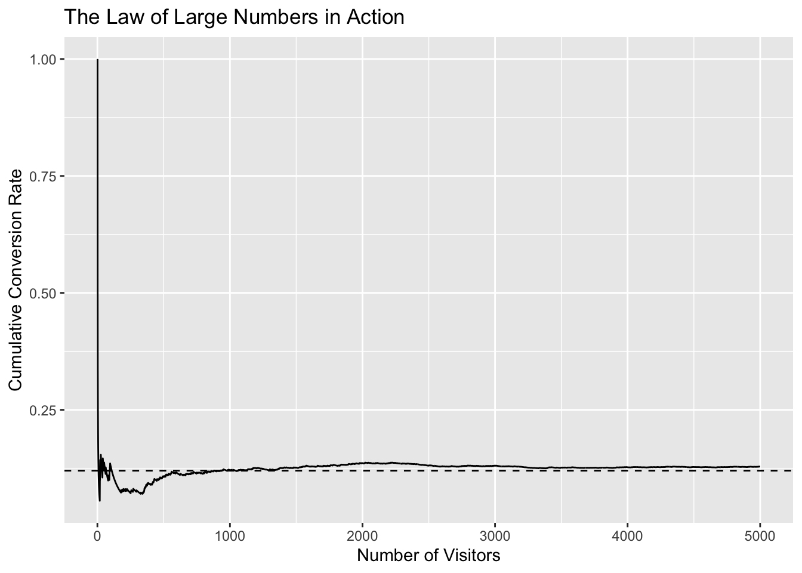
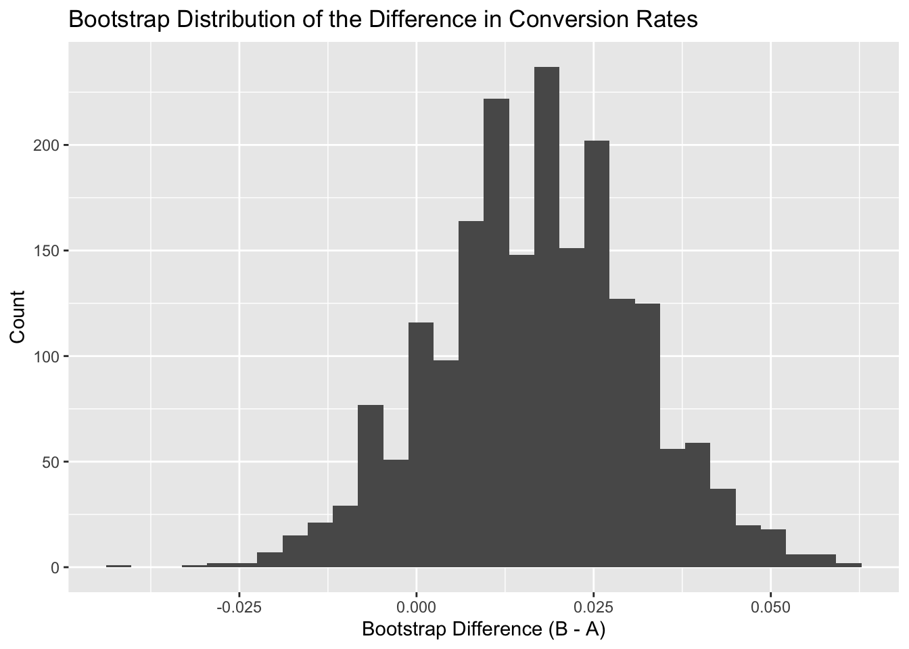
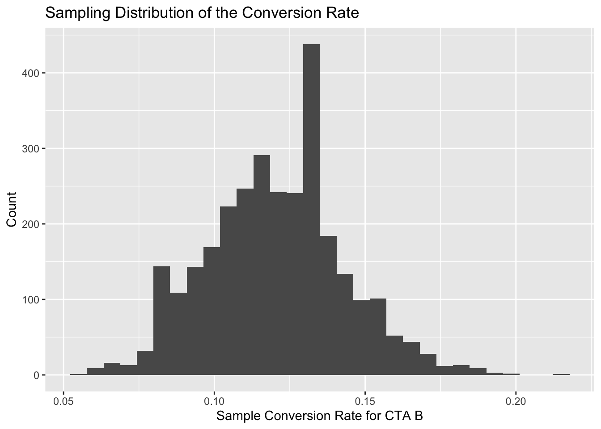

Simulating Key Ideas from Classical Frequentist Statistics
Author
Qiang Hu
Published
April 19, 2026
Introduction
Small changes in website design can have meaningful effects on user behavior. One of the clearest examples is the call to action, or CTA, which is the short prompt that encourages a visitor to do something specific. In this post, the goal is to increase newsletter sign-ups on a website landing page.
Suppose a website owner is choosing between two CTA messages. CTA A says, “Sign up for our newsletter here!” and CTA B says, “Stay up to date by signing up!” The two phrases communicate nearly the same idea, but even subtle differences in wording can influence how people respond. That makes this a natural setting for an A/B test.
The basic idea is simple: randomly show CTA A to some visitors and CTA B to others, then compare the sign-up rates across the two groups. The deeper question is statistical. Even if one CTA is truly better, random variation means the observed sample difference will not perfectly match the truth. This is exactly where classical frequentist statistics becomes useful.
In what follows, I use simulated A/B test data to explain several core ideas in classical frequentist inference. These include sampling variability, the law of large numbers, bootstrap standard errors, the central limit theorem, hypothesis testing, regression, and the problem of peeking at results too early.
The A/B Test as a Statistical Problem
An A/B test is a controlled experiment. Each visitor is randomly assigned to one version of a webpage element, and the analyst compares outcomes across groups. In this example, the outcome is binary: each visitor either signs up for the newsletter or does not.
From a statistical perspective, each CTA has a true but unknown conversion probability. Let ( p_A ) be the true sign-up rate under CTA A and ( p_B ) be the true sign-up rate under CTA B. The goal is to learn whether these two probabilities differ, and more specifically whether CTA B performs better than CTA A.
The challenge is that sample data are noisy. Even with random assignment, the observed conversion rates will fluctuate from sample to sample. A single experiment gives evidence, not certainty. Frequentist statistics provides tools for understanding how much uncertainty remains after observing the data.
Simulating Data
To make the ideas concrete, I simulate an experiment in which CTA A has a true conversion rate of 10% and CTA B has a true conversion rate of 12%. In practice, the true rates are unknown, but simulation lets us study how statistical tools behave when the underlying data-generating process is known.
The table above shows one simulated realization of the experiment. If I reran the simulation, the exact conversion rates would change slightly. That is an important lesson: the observed difference in the sample is not the same thing as the true difference in the population. Statistical inference exists because the sample is only one noisy draw from a broader process.
The Law of Large Numbers
One of the most important ideas in statistics is the law of large numbers. It says that as the sample size increases, the sample average tends to move closer to the true population average. In an A/B test, that means the observed conversion rate becomes more stable as more visitors enter the experiment.
To illustrate this, I repeatedly simulate outcomes under CTA B and track the cumulative conversion rate as the sample grows.

Early in the process, the cumulative conversion rate jumps around a lot because each new visitor has a noticeable effect on the running average. As more observations accumulate, the line becomes more stable and drifts toward the true 12% rate. This is why small experiments can be misleading and why larger samples usually produce more trustworthy estimates.
Bootstrap Standard Errors
A point estimate is only part of the story. We also need to know how much that estimate might vary from sample to sample. One way to measure that uncertainty is with a standard error.
The bootstrap is a flexible and intuitive method for doing this. The idea is to repeatedly resample the observed data with replacement, compute the statistic of interest for each resample, and then examine the distribution of those bootstrap statistics. Here, the statistic of interest is the difference in conversion rates between CTA B and CTA A.

Observed Difference
Bootstrap SE
2.5% Quantile
97.5% Quantile
0.017
0.0145
-0.011
0.046
The bootstrap distribution is centered near the observed sample difference, while its spread reflects sampling uncertainty. The bootstrap standard error gives a useful summary of how much the estimated difference could fluctuate across repeated samples. The interval is also helpful: if it sits mostly above zero, that supports the idea that CTA B is outperforming CTA A in a meaningful way.
The Central Limit Theorem
The central limit theorem explains why so many inferential procedures work well in practice. Informally, it says that when the sample size is sufficiently large, the sampling distribution of a sample mean tends to be approximately normal, even when the raw data themselves are not normally distributed.
That matters here because conversion data are binary, not continuous. Each visitor either signs up or does not. Even so, the average sign-up rate across many visitors can still have an approximately normal sampling distribution.

The histogram is centered near the true conversion rate and has an approximately bell-shaped form. This does not mean that individual sign-up outcomes are normal. It means that the sample mean behaves approximately normally when enough observations are collected. This result is one of the main reasons confidence intervals and hypothesis tests are so useful in large-sample A/B testing.
Hypothesis Testing
Once we have an estimate and a way to quantify uncertainty, we can formally test whether the difference between the two CTAs is statistically meaningful.
The null hypothesis says that the two versions perform equally well:
[ H_0: p_A = p_B ]
The alternative hypothesis says that the conversion rates differ:
[ H_1: p_A p_B ]
A standard test for two proportions compares the observed difference to what would be expected under the null. If the observed difference would be very unlikely when the null is true, the p-value becomes small and we reject the null hypothesis.
If the p-value is small, the sample provides evidence against the null hypothesis of equal performance. In that case, it becomes reasonable to conclude that the CTA wording matters. At the same time, statistical significance should not be confused with practical significance. A result can be statistically significant but still too small to matter much in business terms. Good analysis considers both.
The T-Test as a Regression
A useful insight in applied statistics is that a difference-in-means comparison can also be written as a regression model. Even though the outcome here is binary, a simple linear regression still gives an interpretable representation of the A/B test.
I create an indicator variable for whether a visitor saw CTA B and regress the sign-up outcome on that indicator.
Term
Estimate
Std. Error
P-value
(Intercept)
0.112
0.0103
0.0000
group_b
0.017
0.0146
0.2432
In this regression, the intercept is the mean conversion rate for CTA A. The coefficient on the CTA B indicator is the difference in average conversion rates between the two groups. In other words, the regression coefficient captures the same treatment effect that the A/B test is designed to estimate.
This perspective is valuable because it generalizes naturally. In more realistic settings, analysts may want to adjust for device type, traffic source, geography, or prior user characteristics. Regression provides a clean framework for extending the same logic to more complex experiments.
The Problem with Peeking
One of the most common practical mistakes in experimentation is peeking at the data too early and too often. Imagine checking the p-value every time another small batch of visitors arrives and ending the experiment as soon as significance appears. That strategy may feel efficient, but it can dramatically increase the false positive rate.
To demonstrate this, I simulate many experiments in which CTA A and CTA B actually have the same true conversion rate. Under that setup, any significant result is a false positive. I then repeatedly “peek” during the experiment and stop whenever significance appears.
If the false positive rate rises noticeably above 5%, then the nominal significance cutoff is no longer providing honest error control. In plain language, repeated unscheduled checking makes it too easy to convince ourselves that a difference exists when it does not. This is why experimenters usually commit to a target sample size or a formal stopping rule before examining the final result.
Conclusion
This A/B testing example shows how a seemingly simple website decision connects to several foundational ideas in classical frequentist statistics. Observed conversion rates are always subject to random variation, so the analyst must go beyond raw sample averages and think carefully about uncertainty.
Simulation makes these ideas easier to see. The law of large numbers explains why estimates stabilize in larger samples. The bootstrap helps quantify uncertainty around an observed difference. The central limit theorem shows why sample averages often have approximately normal behavior. Hypothesis testing formalizes evidence against the null, regression reframes the same comparison in a flexible modeling framework, and the peeking example highlights how misuse of inferential tools can create misleading conclusions.
The main lesson is that A/B testing is not simply about picking whichever version has the larger observed conversion rate. It is about making principled decisions under uncertainty, with both statistical reasoning and practical interpretation working together.